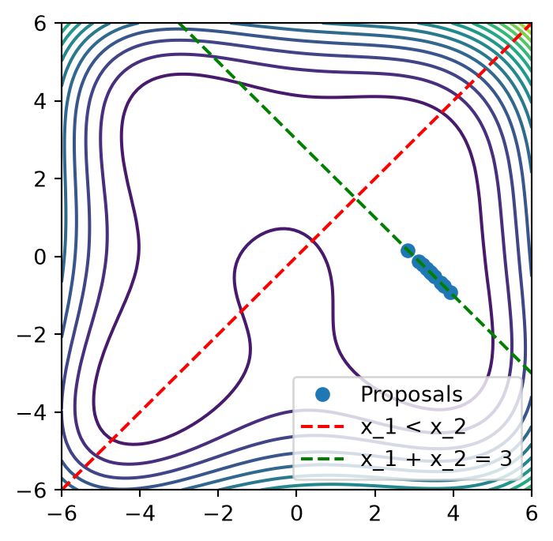
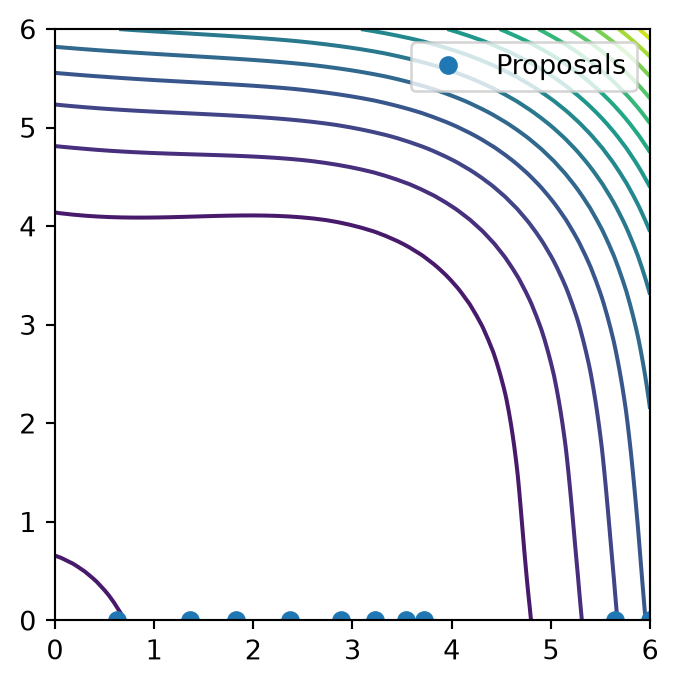
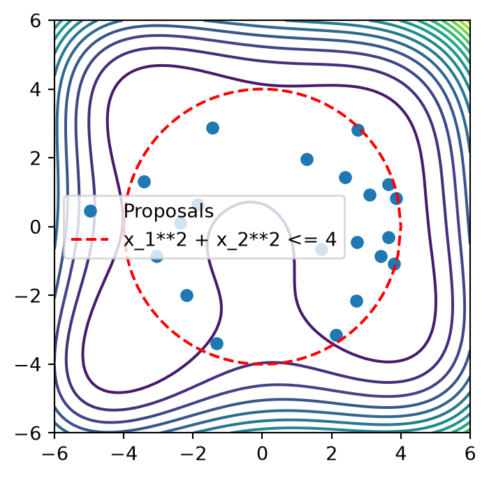
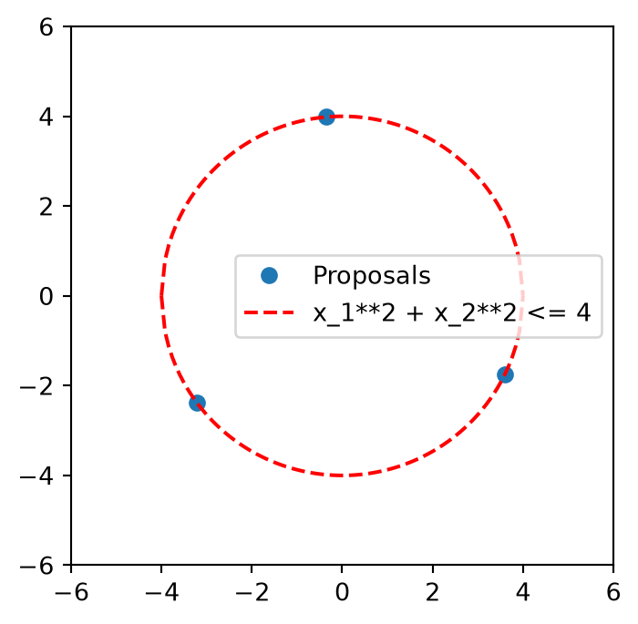
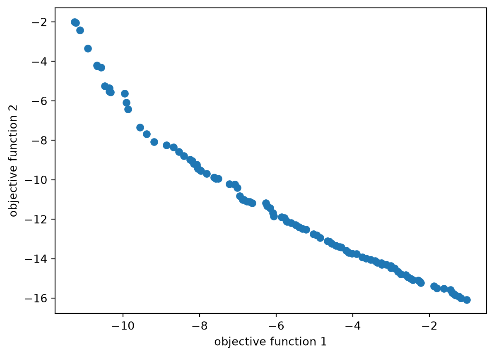

from copy import deepcopy
from time import time
from typing import ListFor optimizations in the bofire domain, a GA optimizer is available
Usage is possible in multiple ways: 1. As an alternative to the botorch optimizer in predictive strategies 2. To optimize custom function in the bofire domain. The utiliy function take care of the definition of the objective domain (variable types, constraints, etc.) and the handling of multiple experiment (\(q\) points).
import matplotlib.pyplot as plt
import numpy as np
import pandas as pd
import torchfrom bofire.benchmarks import api as benchmarks
from bofire.data_models.constraints import api as constraints_data_models
from bofire.data_models.domain import api as domains_data_models
from bofire.data_models.features import api as features_data_models
from bofire.data_models.strategies import api as strategies_data_models
from bofire.strategies import api as strategies
from bofire.strategies.utils import run_gaimport warnings
# Suppress specific warnings
warnings.filterwarnings("ignore", message=".*A not p.d., added jitter")
warnings.filterwarnings(
"ignore", message=".*np.power((rand * alpha), (1.0 / (eta + 1.0)))[mask]"
)The GA supports multiple different constraints
Genetic algorithms are quite flexible and can handle a variety of constraints. However, they usually struggle with equality constraints. In the implementation, linear equality- and inequality constraints, as well as N-choose-k cosntraints are handled by a repair function, using QP. Nonlinear constraints are handled by the GA objective function.
Example 1) Usage for Acquisition Function Optimization
Just pass the GeneticAlgorithmOptimizer to the acquisition_optimizer argument of a strategy. The optimizer will then be used to optimize the acquisition function.
benchmark = benchmarks.Himmelblau()
# generate experiments
experiments = benchmark.f(benchmark.domain.inputs.sample(10), return_complete=True)optimizer = strategies_data_models.GeneticAlgorithmOptimizer(
population_size=100,
n_max_gen=100,
verbose=False,
# Write per-generation GA progress so it can be inspected while optimization runs.
ga_progress_csv_path="_custom_ga_progress.csv",
)benchmark_grid = np.hstack(
[
x.reshape((-1, 1))
for x in np.meshgrid(np.linspace(-6, 6, 100), np.linspace(-6, 6, 100))
]
)
benchmark_grid = pd.DataFrame(
benchmark_grid, columns=benchmark.domain.inputs.get_keys()
)
benchmark_grid["y"] = benchmark.f(benchmark_grid)["y"]def get_proposals(domain, n: int = 10) -> pd.DataFrame:
strategy = strategies_data_models.SoboStrategy(
domain=domain, acquisition_optimizer=optimizer
)
# map to strategy object, and train the model
strategy = strategies.map(strategy)
strategy.tell(experiments)
t0 = time()
proposals = strategy.ask(n, raise_validation_error=False)
print(f"Generated {len(proposals)} experiments, Time taken: {time() - t0:.2f}s")
return proposalsLinear Equality and Inequality Constraints are handled by a repair function, using QP
# generate different cases
domain = deepcopy(benchmark.domain)
domain.constraints.constraints += [
constraints_data_models.LinearEqualityConstraint( # x_1 + x_2 = 3
features=["x_1", "x_2"],
coefficients=[1, 1],
rhs=3,
),
constraints_data_models.LinearInequalityConstraint( # x_2 <= x_1
features=["x_1", "x_2"],
coefficients=[-1, 1],
rhs=0,
),
]
experiments = benchmark.f(
strategies.RandomStrategy.make(domain=domain).ask(10), return_complete=True
)proposals = get_proposals(domain)/opt/hostedtoolcache/Python/3.12.13/x64/lib/python3.12/site-packages/bofire/surrogates/botorch.py:185: UserWarning: The given NumPy array is not writable, and PyTorch does not support non-writable tensors. This means writing to this tensor will result in undefined behavior. You may want to copy the array to protect its data or make it writable before converting it to a tensor. This type of warning will be suppressed for the rest of this program. (Triggered internally at /__w/pytorch/pytorch/torch/csrc/utils/tensor_numpy.cpp:213.)
torch.from_numpy(Y.values).to(**tkwargs),Generated 10 experiments, Time taken: 18.62splt.figure(figsize=(4, 4))
plt.contour(
benchmark_grid["x_1"].values.reshape((100, 100)),
benchmark_grid["x_2"].values.reshape((100, 100)),
benchmark_grid["y"].values.reshape((100, 100)),
levels=20,
label="true system response",
)
plt.plot(proposals["x_1"], proposals["x_2"], "o", label="Proposals")
plt.xlim(-6, 6)
plt.ylim(-6, 6)
plt.plot((-6, 6), (-6, 6), "r--", label="x_1 < x_2")
plt.plot((-6, 6), (9, -3), "g--", label="x_1 + x_2 = 3")
plt.legend()
plt.show()/tmp/ipykernel_6343/1104301492.py:14: UserWarning: Legend does not support handles for QuadContourSet instances.
See: https://matplotlib.org/stable/tutorials/intermediate/legend_guide.html#implementing-a-custom-legend-handler
plt.legend()
NChooseK Constraints are also handled by a repair function, using QP
domain = deepcopy(benchmark.domain)
domain.inputs.get_by_key("x_1").bounds = (0.0, 6.0)
domain.inputs.get_by_key("x_2").bounds = (0.0, 6.0)
domain.constraints.constraints += [
constraints_data_models.NChooseKConstraint(
features=["x_1", "x_2"],
min_count=1,
max_count=1,
none_also_valid=True,
),
]
experiments = benchmark.f(
strategies.RandomStrategy.make(domain=domain).ask(10), return_complete=True
)proposals = get_proposals(domain, n=10)Polishing not needed - no active set detected at optimal point
Polishing not needed - no active set detected at optimal point
Polishing not needed - no active set detected at optimal point
Polishing not needed - no active set detected at optimal point
Polishing not needed - no active set detected at optimal point
Polishing not needed - no active set detected at optimal point
Polishing not needed - no active set detected at optimal point
Polishing not needed - no active set detected at optimal point
Polishing not needed - no active set detected at optimal point
Polishing not needed - no active set detected at optimal point
Polishing not needed - no active set detected at optimal point
Polishing not needed - no active set detected at optimal point
Polishing not needed - no active set detected at optimal point
Polishing not needed - no active set detected at optimal point
Polishing not needed - no active set detected at optimal point
Polishing not needed - no active set detected at optimal point
Polishing not needed - no active set detected at optimal point
Polishing not needed - no active set detected at optimal point
Polishing not needed - no active set detected at optimal point
Polishing not needed - no active set detected at optimal point
Polishing not needed - no active set detected at optimal point
Generated 10 experiments, Time taken: 11.03s/opt/hostedtoolcache/Python/3.12.13/x64/lib/python3.12/site-packages/bofire/data_models/domain/domain.py:398: UserWarning: Not all constraints are fulfilled.
warnings.warn("Not all constraints are fulfilled.")
/opt/hostedtoolcache/Python/3.12.13/x64/lib/python3.12/site-packages/bofire/data_models/domain/domain.py:398: UserWarning: Not all constraints are fulfilled.
warnings.warn("Not all constraints are fulfilled.")plt.figure(figsize=(4, 4))
plt.contour(
benchmark_grid["x_1"].values.reshape((100, 100)),
benchmark_grid["x_2"].values.reshape((100, 100)),
benchmark_grid["y"].values.reshape((100, 100)),
levels=20,
label="true system response",
)
plt.plot(proposals["x_1"], proposals["x_2"], "o", label="Proposals")
plt.xlim(0, 6)
plt.ylim(0, 6)
plt.legend()
plt.show()/tmp/ipykernel_6343/2170543038.py:12: UserWarning: Legend does not support handles for QuadContourSet instances.
See: https://matplotlib.org/stable/tutorials/intermediate/legend_guide.html#implementing-a-custom-legend-handler
plt.legend()
Inequality Constraints are handled by the GA objctive function
domain = deepcopy(benchmark.domain)
domain.constraints.constraints += [
constraints_data_models.NonlinearInequalityConstraint(
expression="x_1**2 + x_2**2 - 16",
features=["x_1", "x_2"],
),
]
proposals = get_proposals(domain, n=20)Generated 20 experiments, Time taken: 10.04splt.figure(figsize=(4, 4))
plt.contour(
benchmark_grid["x_1"].values.reshape((100, 100)),
benchmark_grid["x_2"].values.reshape((100, 100)),
benchmark_grid["y"].values.reshape((100, 100)),
levels=20,
label="true system response",
)
plt.plot(proposals["x_1"], proposals["x_2"], "o", label="Proposals")
x = np.linspace(-4, 4, 100)
y1 = np.sqrt(16 - x**2)
y2 = -y1
plt.plot(x, y1, "r--", label="x_1**2 + x_2**2 <= 4")
plt.plot(x, y2, "r--")
plt.xlim(-6, 6)
plt.ylim(-6, 6)
plt.legend()
plt.show()/tmp/ipykernel_6343/1844526682.py:17: UserWarning: Legend does not support handles for QuadContourSet instances.
See: https://matplotlib.org/stable/tutorials/intermediate/legend_guide.html#implementing-a-custom-legend-handler
plt.legend()
Inspect the current progress rows written by the optimizer. Note, that these results can also be obtained during execution.
pd.read_csv("_custom_ga_progress.csv").head()| generation | n_eval | best_f | |
|---|---|---|---|
| 0 | 1 | 100 | -2.221746 |
| 1 | 2 | 200 | -2.284314 |
| 2 | 3 | 300 | -2.480472 |
| 3 | 4 | 400 | -2.228151 |
| 4 | 5 | 500 | -2.469943 |
Example 2) Usage for Custom Function Optimization
We can define a domain with input features, and constraints. Output features are not required
domain = domains_data_models.Domain(
inputs=domains_data_models.Inputs(
features=[
features_data_models.ContinuousInput(
key="x_1",
bounds=(-6, 6),
),
features_data_models.ContinuousInput(
key="x_2",
bounds=(-6, 6),
),
]
),
constraints=[
constraints_data_models.NonlinearInequalityConstraint(
expression="x_1**2 + x_2**2 - 16",
features=["x_1", "x_2"],
),
],
)optimizer = strategies_data_models.GeneticAlgorithmOptimizer(
population_size=100,
n_max_gen=100,
verbose=False,
)The GA progress file is updated generation-by-generation and can already be read while the GA run is still executing.
Define the optimization problem: a) Using evaluations on pd.DataFrame
We want to maximize the mean variance of the experiments dataframe. The objective function will be called with a list of dataframes, each representing a set of experiments. Each list entry is one individual in the population of the GA. The direction of the optimizer is a minimization of the objective function. So we minimize the negative mean variance of each 3 experiments in a batch in this case.
def objective_function(x: List[pd.DataFrame]) -> np.ndarray:
"""assume we want to maximize the mean variance of the experiments dataframe"""
vars = [xi.var(numeric_only=True).mean() for xi in x]
return np.array(vars)Run the optimization with the utility function run_ga
x_opt, f_opt = run_ga(
data_model=optimizer,
domain=domain,
objective_callables=[objective_function], # list of objective functions to optimize
q=3, # number of points to optimize
callable_format="pandas",
optimization_direction="max", # maximize the objective function
)proposals = x_opt[0]
proposals| column | x_1 | x_2 |
|---|---|---|
| 0 | -3.220461 | -2.371898 |
| 1 | -0.353195 | 3.984038 |
| 2 | 3.597366 | -1.745040 |
plt.figure(figsize=(4, 4))
plt.plot(proposals["x_1"], proposals["x_2"], "o", label="Proposals")
x = np.linspace(-4, 4, 100)
y1 = np.sqrt(16 - x**2)
y2 = -y1
plt.plot(x, y1, "r--", label="x_1**2 + x_2**2 <= 4")
plt.plot(x, y2, "r--")
plt.xlim(-6, 6)
plt.ylim(-6, 6)
plt.legend()
plt.show()
Define the optimization problem: a) Using evaluations on torch.Tensor
For efficiency, we can also compute the objective function as a callable of type Tensor. In this case, the computation is in the numerical domain.
This means, that categorical columns etc. are encoded. A specification with input_preprocessing_specs can be passed to the objective function (otherwise, defaults are used)
The objective accepts a Tensor in shape (n, q, d) and should return a Tensor of shape (n,)
def objective_function(x: torch.Tensor) -> torch.Tensor:
var = torch.var(x, dim=2)
var_mean = torch.mean(var, dim=1)
return var_meanx_opt, f_opt = run_ga(
data_model=optimizer,
domain=domain,
objective_callables=[objective_function], # list of objective functions to optimize
q=3, # number of points to optimize
callable_format="torch",
optimization_direction="max", # maximize the objective function
)x_opttensor([[ 2.9770, -2.6709],
[ 3.0277, -2.6072],
[-2.5176, 3.1024]], dtype=torch.float64)Example 3: Multiobjective Optimization
by giving multiple objective functions, or returning a 2D array from the objective, we will trigger multiobjective optimization
def objective_function_1(x: List[pd.DataFrame]) -> np.ndarray:
"""assume we want to maximize the mean variance of the experiments dataframe"""
vars = [xi.var(numeric_only=True).mean() for xi in x]
return np.array(vars)def objective_function_2(x: List[pd.DataFrame]) -> np.ndarray:
"""Maximize the sum of all inputs"""
vars = [xi.sum().sum() for xi in x]
return np.array(vars)x_opt, f_opt = run_ga(
data_model=optimizer,
domain=domain,
objective_callables=[
objective_function_1,
objective_function_2,
], # list of objective functions to optimize
q=3, # number of points to optimize
callable_format="pandas",
optimization_direction="max", # maximize the objective function
)In the multiobjective-case, the result is a list of pd.DataFrame with different pareto-optimal solutions
plt.scatter(f_opt[:, 0], f_opt[:, 1])
plt.xlabel("objective function 1")
plt.ylabel("objective function 2")Text(0, 0.5, 'objective function 2')
x_opt[0]| column | x_1 | x_2 |
|---|---|---|
| 0 | 1.668431 | 3.624677 |
| 1 | 3.577562 | 1.592961 |
| 2 | 3.143366 | 2.471212 |
x_opt[1]| column | x_1 | x_2 |
|---|---|---|
| 0 | -0.352533 | 3.905386 |
| 1 | -3.182947 | -2.191769 |
| 2 | 3.948835 | -0.130567 |